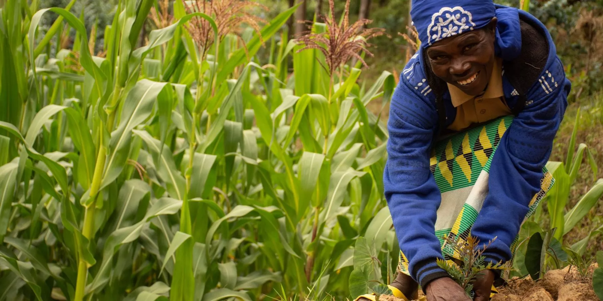

Masilo Golden Path is a modern agricultural enterprise dedicated to sustainable farming and high-quality produce. Established with the vision of combining traditional farming practices with innovative techniques, Golden focuses on cultivating crops and raising livestock in an environmentally responsible way. The business aims to meet the growing demand for fresh, nutritious, and safe food while supporting local communities and promoting rural development
.HLEOHENGMAPUTSOE 350
LESOTHO
EMAIL:masilosello808.gmail.com
